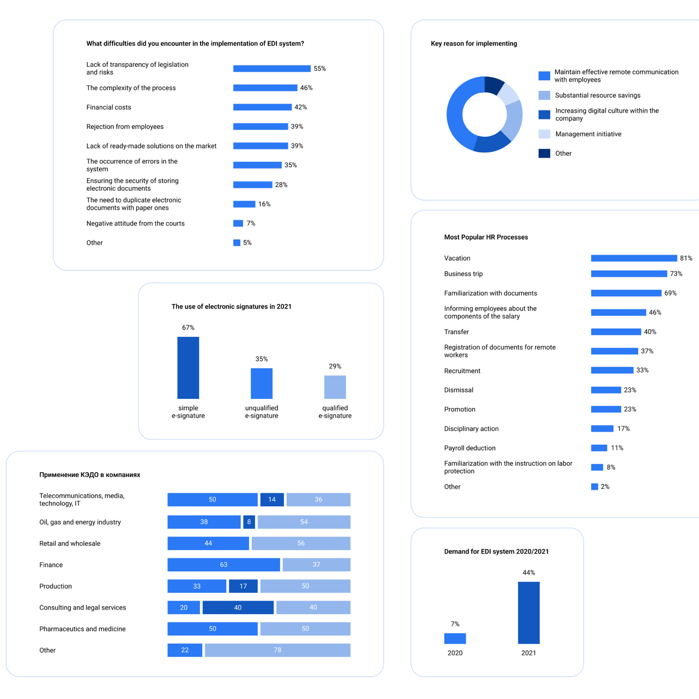
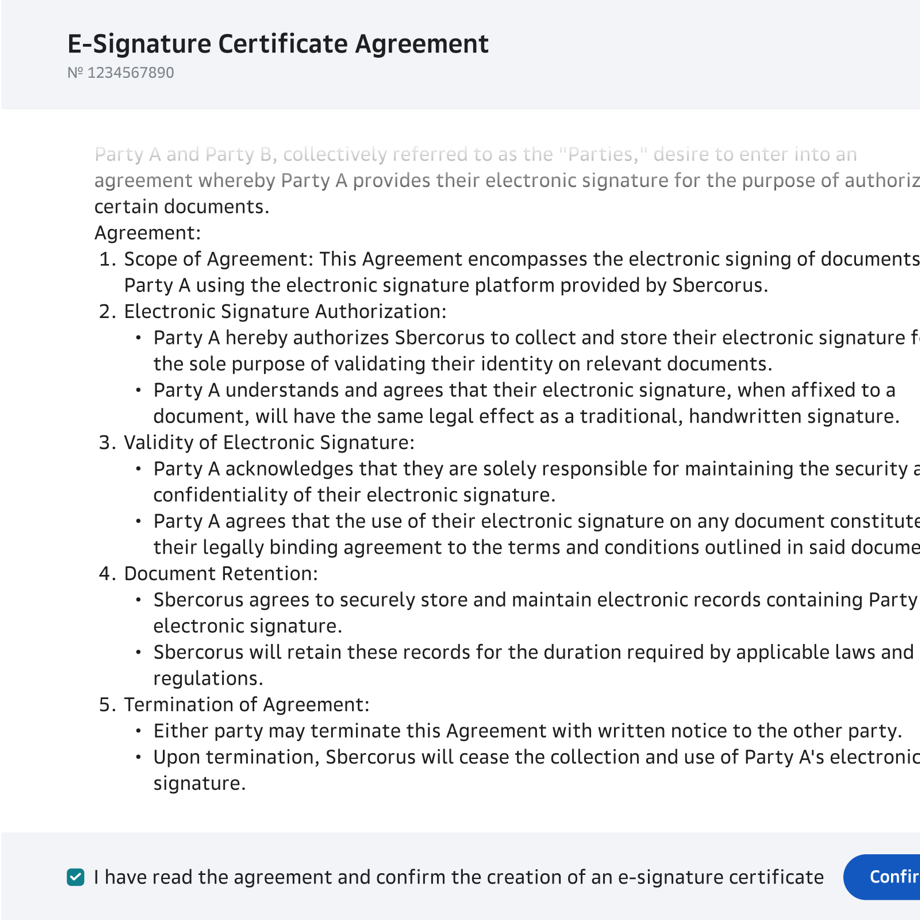
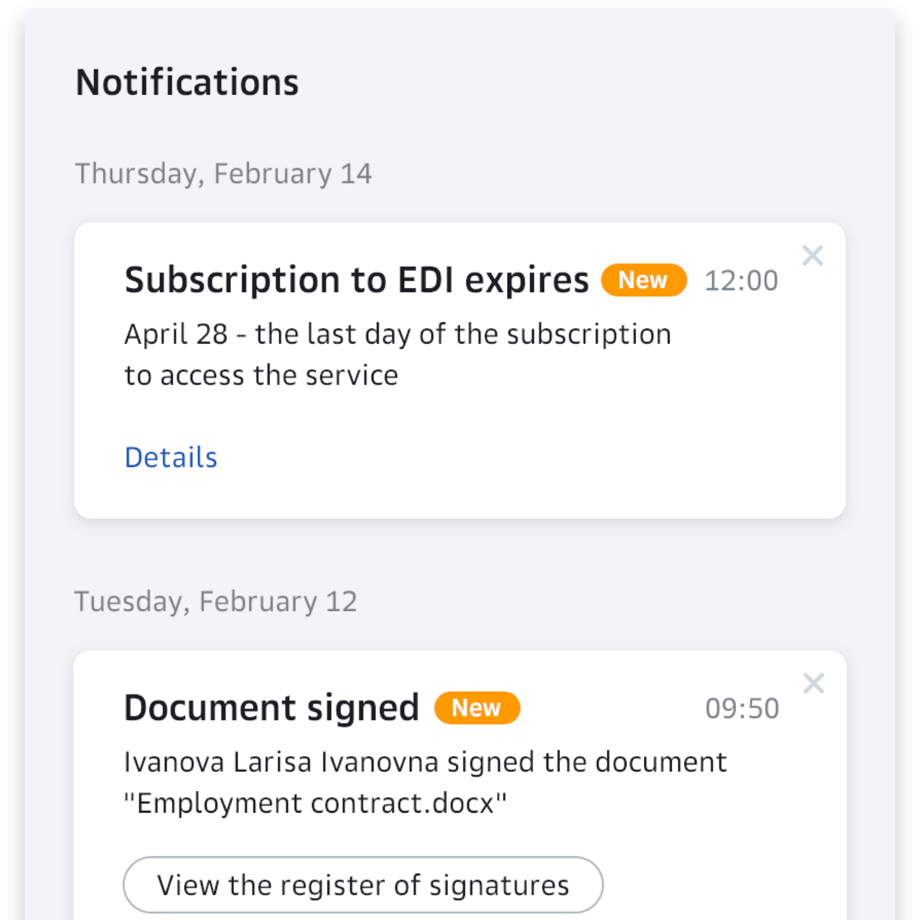
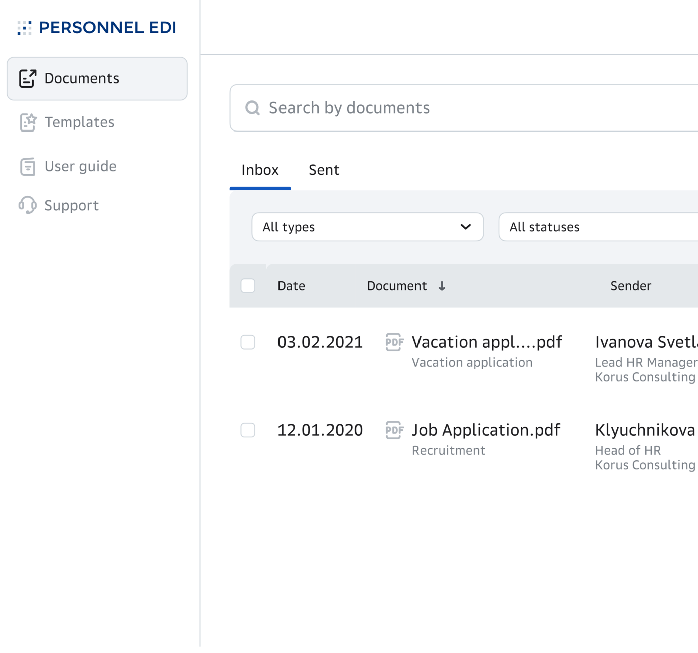
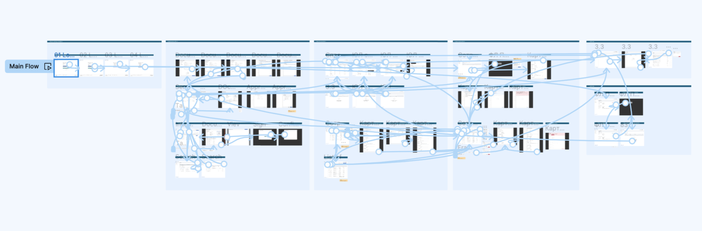

KEDO — enterprise HR document signing, as simple as email
A legally-valid e-signature platform for HR documents — the flagship launch I designed, live to 70+ companies in its first five months.
Overview
KEDO lets companies and employees exchange and sign HR documents remotely — replacing paper while staying legally compliant for signing and archiving. It was a flagship launch, and the design challenge was to make a heavily regulated process feel as simple as sending an email. I was the only designer on it, end-to-end, in a cross-functional team.
The problem
Companies with distributed teams had no fast, legal way to sign and manage HR documents remotely. Paper meant cost, delay and storage overhead — but any digital replacement had to satisfy strict legal requirements for signing and archiving. The product had to make a compliance-heavy process feel effortless to people who aren't lawyers — across the full range of HR paperwork: hiring and termination, leave, policy sign-offs, contract changes, business travel, and more.
Research & discovery
I built this on real input, not assumptions, working closely with the business analyst and HR team:
- Market & competitor analysis (with the analyst) — mapped pain points, document types, and what actually drives adoption of a service like this.
- User research — interviews and surveys with 4 HR professionals and 4 employees, to understand real workflows on both sides of a document.
- A continuous stakeholder loop — balancing legal and business constraints against user needs.

Goals
- Make signing a legally-binding document feel like one safe, familiar step.
- Drive org-wide adoption — the real metric is companies onboarded, not screens shipped.
- Work equally well on desktop and mobile.
Key design decisions
1. A legally-valid signature in one confirmation, not a legal maze
2. Borrow the mental model of email
3. Two-tier notifications — informed, not noisy
4. A guided send-document flow
5. Built on (and extended) the design system




Validation → iteration
At MVP I ran usability testing with internal users. Sending a document tested well — but search scored poorly. So it became its own redesign track: a focused project on how people actually find documents. The test changed the product, not just confirmed it. (I later broke that work out into its own case study.)
Outcome
- 70+ companies and ~1,800 employees adopted KEDO in its first five months after launch.
- It shipped as a flagship product — and is still on the market today.
- The email mental model and one-tap signing made a regulated process clear enough for non-experts to adopt org-wide.
What I learned
- In regulated B2B, trust is the design. Making a legally-binding action feel safe and simple mattered more than any feature — the product lived or died on whether people trusted one click.
- A usability test is only useful if it can change the product. The weak-search finding became its own redesign — I treat test results as a mandate, not a checkbox.
- Being the only designer in a cross-functional team is a leadership role. I had to make the design case to PM, product owner, analysts and engineers and bring them along — not just hand off screens.